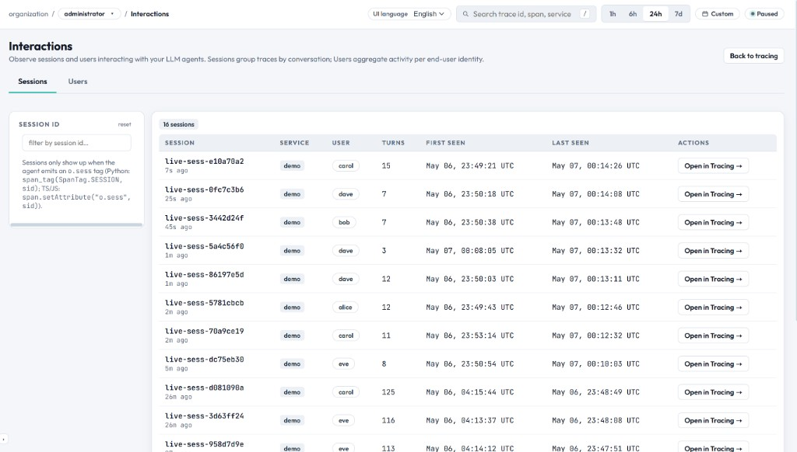

Interactions
The Interactions page unifies session-level and user-level observation into a single tabbed view. Observe how conversations flow across turns (Sessions tab) and how individual end-users engage with your LLM agents (Users tab).

Overview
Interactions brings together two perspectives on agent engagement:
| Tab | Groups by | Attribute | Use case |
|---|---|---|---|
| Sessions | Conversation / Session ID | o.sess | Multi-turn conversation analysis, turn-by-turn replay |
| Users | End-user ID | o.user | Per-user activity summary, cost tracking, engagement patterns |
Sessions Tab
A session groups traces sharing the same o.sess attribute — typically one conversation across many turns. The hierarchy is session > traces > spans.
How Sessions Are Created
Sessions emerge automatically when traces share the same session ID. Set the session attribute in your agent code:
Python SDK
from easyobs_agent import init, traced, span_tag, SpanTag
init("http://127.0.0.1:8787", token="eobs_...", service="my-agent")
@traced("agent.turn")
def handle_turn(user_msg: str):
span_tag(SpanTag.SESSION, "conv-abc-123")
span_tag(SpanTag.USER, "user-456")
...TypeScript / JS (OTLP)
span.setAttribute("o.sess", "conv-abc-123");
span.setAttribute("o.user", "user-456");LangChain Callback
from easyobs_agent import init
init(session="conv-abc-123", user="user-456", auto_langchain=True)Sessions List Columns
| Column | Description |
|---|---|
| Session | The o.sess value (click to open inspector) |
| Service | Most recent service name |
| User | Associated o.user value if present |
| Turns | Number of traces in the session |
| First seen | Timestamp of earliest trace |
| Last seen | Timestamp of most recent trace |
| Actions | Link to open session traces in the Tracing page |
Session Inspector (Drawer)
Clicking a session row opens an inspector panel with:
- Session metadata (ID, service, user, trace count)
- Token and cost roll-ups across all turns
- Error count and models used
- Chronological turn list linking to individual trace details
Users Tab
The Users tab aggregates activity per end-user identity. Any trace with an o.user attribute is counted toward that user's activity summary.
How Users Are Tracked
Users are identified by the o.user span attribute. Set it alongside the session:
# Python
span_tag(SpanTag.USER, "user-456")
# TypeScript / JS
span.setAttribute("o.user", "user-456");Users List Columns
| Column | Description |
|---|---|
| User | The o.user value (click to open inspector) |
| Service | Most recent service name |
| Sessions | Number of distinct sessions for this user |
| Traces | Total trace count |
| Tokens | Sum of input + output tokens |
| Cost | Cumulative USD cost |
| Last seen | Most recent activity timestamp |
User Inspector (Drawer)
Clicking a user row opens an inspector panel showing:
- User identity, service, session/trace counts
- Token and cost aggregates
- Error count and models used
- Recent traces list (most recent first, up to 30 shown)
Filtering & Search
- Time Window: Both tabs respect the global time window in the top bar
- Search (global): Filters by session ID / user ID / service substring
- Left-rail filter: Per-tab exact filter (Session ID or User ID)
Required Attributes
| Attribute | Purpose | Required For | Example |
|---|---|---|---|
o.sess | Session ID | Sessions tab | "conv-abc-123" |
o.user | End-user identifier | Users tab | "user-456" |
o.q | User query text | Conversation replay | "What's the weather?" |
o.r | Agent response text | Conversation replay | "It's 72°F and sunny." |
Best Practices
- Use consistent, unique session IDs (UUIDs recommended)
- Always set both
o.sessando.userfor full visibility - Keep session IDs stable across reconnections (use a persistent conversation ID from your app)
- User IDs should match your application's user model (email, UUID, etc.)
- For A/B tests, prefix session IDs:
exp-v2-{uuid}for easy filtering
API Endpoints
| Endpoint | Description |
|---|---|
GET /v1/analytics/sessions | List sessions with aggregates |
GET /v1/analytics/users | List users with activity summaries |
GET /v1/traces?session_id=… | Traces for a specific session |
GET /v1/traces?user_id=… | Traces for a specific user |